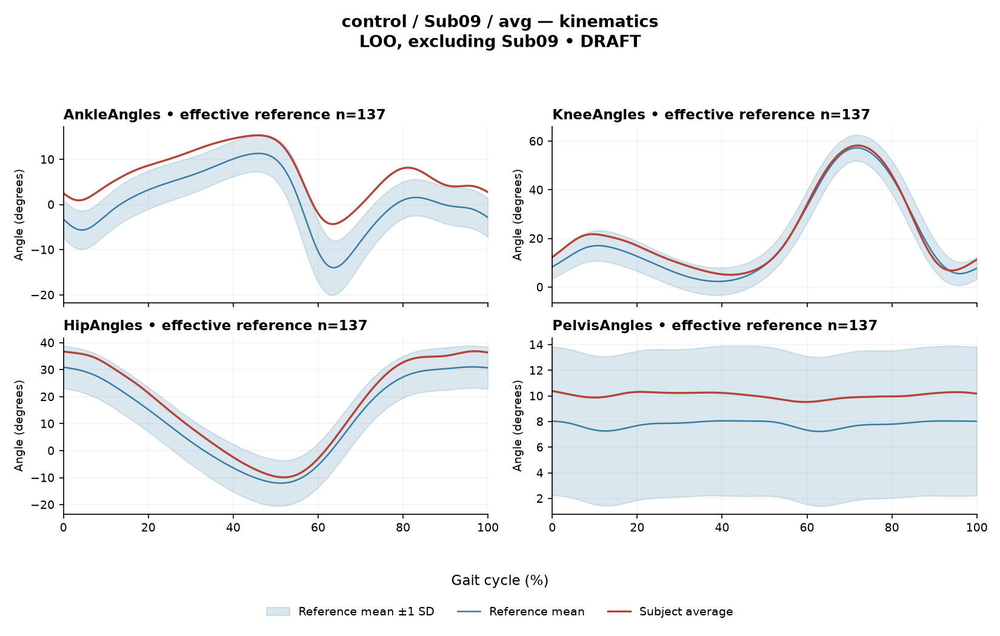

rater1 / Report 47 of 105 / Review spreadsheet row 48
R84656555A6E3EAD7
Case: control_Sub09_avg
Read this report independently. Record judgments in the workbook. Browser pages do not save ratings.
Report: exact saved text
## 1. Objective Findings - **Participant:** Sub09, control group. Affected/paretic side is **not applicable**. The healthy release documents left/right stride pooling; these findings should not be assigned to one named limb. - **Gait speed and cadence:** not provided. - **Step-length symmetry:** this task’s paretic/non-paretic index is not applicable to controls; general left/right symmetry cannot be assessed from the supplied summary. - **Available measurements:** seven EMG envelopes and sagittal-plane ankle, knee, hip, and pelvis kinematics. Coronal/transverse kinematics are not included. - **GPS-like score:** **4.35**. - Individual toe-off, matched muscle-specific timing references, stride-level variability, and raw-signal quality checks are not supplied. The documented cycle extends from initial contact of the contributing stride to its next initial contact. For the pooled healthy curves, this is an initial-contact-aligned analysis cycle, not one limb’s observed event trace. Healthy MAT pooling and side-specific denominators were not numerically reverified by the stroke audit. ## 2. EMG Envelope and Threshold Findings The findings describe **ensemble-averaged envelopes**, using a shared maximum across available strides for each participant and muscle before averaging, without further amplitude normalization here. Peak amplitudes are relative envelope values, not strength, force, or absolute neural activation. Retained intervals exceed **20% of each mean curve’s own peak**, with a minimum duration of **3% of the cycle by sample count**. | Muscle | Retained intervals (% cycle) | Reported coverage | Peak normalized amplitude | Maximum \|z\|: direction relative to reference mean, location | |---|---|---:|---:|---| | GAS | 5%–47% | 42% | 0.64 | 2.0: above, 28% | | RF | 62%–66%; 86%–48% (wrap) | 65% | 0.66 | 2.3: above, 90% | | VL | 89%–22% (wrap) | 34% | 0.64 | 1.2: below, 55% | | BF | 78%–9% (wrap) | 32% | 0.61 | 1.5: above, 99% | | ST | 67%–12% (wrap) | 45% | 0.70 | 2.2: above, 98% | | TA | 52%–80%; 86%–21% (wrap) | 63% | 0.56 | 1.6: below, 62% | | ERS | 0%–100% | 100% | 0.59 | 1.6: above, 9% | RF, VL, BF, ST, TA, and ERS have explicitly reported above-threshold continuity across the initial-contact boundary of contributing strides. ERS has a retained interval spanning the full analysis window. These are mean-envelope threshold properties—not physiological onset/offset, continuous contraction, or evidence that every stride has the same pattern. Values outside retained intervals should not be interpreted as inactivity. No intermediate gait events or phase functions can be assigned from these percentages. **Whole-cycle co-contraction indices:** - **TA–GAS: 0.35**, within the supplied empirical interval **0.24–0.59** and below its median **0.39**. - **RF–BF: 0.58**, within **0.48–0.83** and below its median **0.68**. These Falconer–Winter CCIs quantify whole-cycle overlap of normalized continuous envelopes, including subthreshold contributions. They are not simultaneous activation time, muscular force, or phase-specific results, and depend on the normalization and envelope methods. ## 3. Kinematic and Reference Comparisons | Sagittal channel | ROM | Gait Variable Score | |---|---:|---:| | Ankle | 19.7° | 6.17 | | Knee | 53.2° | 2.99 | | Hip | 46.7° | 4.84 | | Pelvis | 0.9° | 2.27 | The ankle has the largest supplied GVS, followed by hip, knee, and pelvis. These scores summarize waveform differences from the reference; they do not identify their direction or cycle location. ROM values alone do not establish clinical restriction. The **GPS-like score of 4.35** is below the supplied pooled calibration median **5.1** and 95th percentile **10.7**. It is an RMS summary across the supplied sagittal channels, not the validated nine-variable GPS. The stated deviation reference is **137 healthy subjects**, excluding Sub09 in a leave-one-out comparison, evaluated at **1001 phase points** from `main_cohort_excel`. EMG maximum |z| identifies the largest standardized difference across those points—not necessarily peak envelope amplitude or a gait event. “Above” and “below” refer to the phase-specific reference mean. These extreme-value statistics should not be classified using a conventional single-observation 2-SD rule. **Comparison limits:** the references pool sides and ages and are not individually matched; walking speed is unavailable here. Pooled CCI intervals and composite-score percentiles are not matched leave-one-out normal limits. Consequently, agreement or deviation cannot establish normal physiology, a disease effect, or a clinical diagnosis, including for a control participant. ## 4. Questions for Further Clinical Assessment - Are there symptoms, functional concerns, or examination findings that require correlation with these descriptive measurements? - What were walking speed and cadence, and is an appropriately matched comparison available? - Would side-resolved waveforms and individual event annotations reveal differences obscured by pooled averages? - Do stride-level recordings and signal-quality checks support the reported interval and boundary-continuity findings? - Which ankle waveform features contribute to its GVS, and how do the reported ROM values compare with an appropriate reference and clinical examination?
Requirements for this report
Fill the corresponding Coverage rows in the workbook. G03 is included once. These are the approved requirements, not prefilled judgments.
| Excel row | ID | Required content | Components / optional content |
|---|---|---|---|
| 245 | R192 | Identify ankle AND hip as the relatively larger sagittal GVS differences. Exact GVS values are optional; identify the findings as reference-relative sagittal summary differences. | AND: ankle AND hip. Stating which joint is larger is optional; asserting the reverse order is an error. Exact GVS values are optional; no waveform direction, phase or restriction is required. |
| 246 | R193 | Describe EITHER (A) RF envelope above its phase-specific reference mean at approximately 90% of the cycle OR (B) ERS mean-envelope above-threshold coverage reported as 100% of the cycle OR (C) all seven supplied muscles have displayed max |z| values below 3.65. One complete route suffices. Exact single-muscle max-|z| magnitudes are optional. | A: RF AND above-mean direction AND approximate location. B: ERS AND reported 100% mean-envelope threshold extent. C: all seven supplied muscles AND displayed max-|z| comparison below 3.65. No signed direction or location is required for B/C. The 3.65 comparison is a displayed-value statement about a supplied pooled endpoint, not a matched LOO normal limit or a clinical classification. Threshold extent remains an averaged-envelope property. |
| 247 | A012 | Identify the participant as a healthy control AND state that the leave-one-out comparison excludes this participant. IF speed is discussed, state it was not supplied; IF cadence is discussed, state it was not supplied; IF the task-specific paretic/non-paretic step-length index is discussed, state it is not applicable. Each branch is triggered only by that domain. Exact reference count 137 is optional. | AND: healthy-control provenance AND self-exclusion from the leave-one-out reference. Conditional, per domain: speed not supplied; cadence not supplied; task-specific paretic/non-paretic index not applicable. Optional: count 137. G03 applies separately once. A correct core with one missing AND component is partial. |
| 248 | G03 | Express a meaningful limitation of reference comparability AND why the comparison cannot establish disease effects or clinical diagnosis; for controls it cannot establish disease or overall normality. One statement may also support a case requirement. | AND: comparability and inference limitations |
Exact model input: system instruction
Draft a research gait-report interpretation for a physical therapist or physiatrist using only the supplied quantitative summary. This is a limited-evidence interpretation task, not diagnosis or treatment selection. Rules: - Describe the participant's actual group and side, available findings, and missing channels accurately. Healthy-group membership does not prove normal physiology; deviations from an empirical reference do not by themselves establish disease. - Treat detected EMG intervals and coverage as properties of an averaged envelope under the stated threshold and duration rule. Do not convert them into physiological onset, offset, duration, continuous contraction, or inactivity outside the intervals. You may describe reported coverage, retained intervals and boundary continuity at the mean-envelope level. Do not infer the same pattern in every individual stride. Say no below-threshold segment only when the supplied evidence establishes that; a rounded coverage value or no retained interval alone does not establish it. - Individual toe-off and matched muscle-specific timing references are not supplied in this task. Use percentages of the analysis cycle. When the input explicitly identifies an initial-contact boundary, you may name that boundary or describe numerical proximity to it. Do not assign stance/swing, loading response, pre-swing, mid-stance or another event to a percentage, or substitute a conventional 60% split. Anatomical muscle actions may be named, but do not map an interval to a gait-phase function such as clearance, push-off or weight acceptance. Do not characterize timing as normal, early, delayed or prolonged without the required evidence. - Respect the supplied normalization method. Relative envelope amplitude is not strength or force, and average curves do not establish stride-to-stride variability. - Report CCI as a whole-cycle overlap index of normalized EMG envelopes. You may compare it with the supplied empirical interval or a supplied median, including proximity to an endpoint. Do not invent an unavailable median. Being within that interval does not establish physiologically normal co-activation or normal muscle function; being outside it does not establish pathological co-activation, stiffness, impaired control or a diagnosis. CCI is not simultaneous activation time, muscular force or a phase-specific result. It depends on normalization and envelope methods; do not transfer values or thresholds from other studies or algorithms. - Describe GVS and GPS-like as summary differences from the stated reference. Neither localizes waveform direction or phase; ROM alone does not establish a clinical restriction without an appropriate comparison. Do not treat pooled calibration percentiles as matched leave-one-out normal limits. - Where using a reference comparison, convey both limited comparability and the inability to establish a disease effect or clinical diagnosis from that comparison. One clear explanation per report is enough; age and speed need not be recited as separate checklist words. A speed inside an overall range does not prove that an appropriate matched reference exists. Apply these limits to controls as well. - The location of maximum |z| is the largest standardized difference from the reference, not necessarily the time of peak envelope amplitude or a gait event. Above/below reference in an EMG row means relative to the phase-specific reference mean at that location, not relative to a healthy percentile limit. - Preserve numerical direction and the displayed precision. Do not invent values, clinical severity grades, statistical significance, or unavailable reference values. Descriptive comparisons with supplied values remain allowed. Near-boundary rounded values do not justify classifying hidden unrounded values. - Clinical follow-up questions may ask whether a mechanism or measurement issue exists; do not presuppose it has already been observed. Do not recommend treatment. If EMG is unavailable, section 2 may simply state that envelope timing, amplitude and CCI cannot be assessed. Reference-only plots do not provide patient EMG. Use exactly these four sections: 1. Objective Findings 2. EMG Envelope and Threshold Findings 3. Kinematic and Reference Comparisons 4. Questions for Further Clinical Assessment
Exact model input: case summary
Candidate interpretation version: limited-evidence-v3.1-candidate
Draft the four-section report using only this subject's supplied evidence.
Metric definitions (read before interpreting any number below):
- All joint angles and ROM values are SAGITTAL PLANE only. Coronal/transverse data are not included.
- The released EMG curves are ensemble-averaged envelopes. For each participant and recorded muscle, normalization uses a shared maximum across the available strides before averaging; individual strides are not independently rescaled to their own peaks. This pipeline uses the released mean curves without further amplitude normalization. For healthy controls, the normalization and left/right stride pooling account comes from the release documentation. Healthy MAT aggregation and side-specific denominators were not numerically verified by the stroke audit. Amplitudes are relative envelope values, not absolute neural activation, force, or strength. Do not rank muscles as stronger or weaker from these amplitudes, or infer stride-to-stride variability from an average curve.
- Above-threshold intervals are the regions where the averaged envelope exceeds 20% of that curve's own peak, minimum retained interval 3% of the cycle (by sample count). An interval written as (X%-Y%) with X > Y wraps across the 100%->0% cycle boundary (envelope remains above threshold across the cycle-defining event). An onset of 0% is the analysis-window boundary, not necessarily a physiological onset. "No interval detected" means no region met the threshold + duration criteria; it does NOT mean the muscle is inactive or non-functional.
- CCI is the Falconer-Winter co-contraction index computed on the full continuous envelopes (2*common area / summed areas), so it can be non-zero even when the DETECTED burst intervals of the pair do not overlap (sub-threshold activity contributes).
- The composite kinematic deviation score is the RMS of the per-joint Gait Variable Scores over the sagittal channels provided ("GPS-like", not the validated 9-variable GPS).
- The paretic/non-paretic step-length index used in this task is not applicable to controls. This does not imply that a general left/right step-length symmetry measure cannot be defined.
- "Max |z| deviation" is the LARGEST absolute z-score across all 1001 phase points of the cycle, comparing this curve to the healthy-cohort mean/SD at each phase. This is an extreme-value statistic, NOT a single-observation z-score: in this dataset every one of 109 healthy controls exceeds |z| = 2 on at least one muscle, and per-muscle healthy 95th percentiles for this statistic run 3.65 (ERS) to 4.61 (TA) -- higher still under leave-one-out. Do not label a value abnormal by the conventional 2-SD rule; use the healthy reference range given per muscle where provided.
- Healthy-cohort CCI reference (this dataset): RF-vs-BF median 0.68 (2.5th-97.5th pct 0.48-0.83); TA-vs-GAS median 0.39 (0.24-0.59). Composite score reference: median 5.1, 95th percentile 10.7.
- COHORT BACKGROUND (calibration context, not necessarily the exact reference used for this subject -- the actual reference composition is stated in a dedicated line with the subject data below): the full healthy cohort is 138 subjects for kinematics, effective n = 106-109 per muscle for EMG (29 controls have no usable EMG; completeness varies by age), pooling both body sides and all ages; it is not age- or speed-matched to this subject. A leave-one-out run uses one subject fewer than these counts.
- SPEED SUPPORT LIMIT (applies to most stroke subjects in this dataset): the healthy reference cohort's self-selected walking speeds span 0.80-1.79 m/s. If this subject's gait speed is below 0.80 m/s, NO speed-matched healthy reference exists in this dataset -- 41 of the 50 stroke subjects are below that floor. Deviations from the reference then conflate slow-walking effects with stroke-specific control changes, and the two cannot be separated from these data. Describe deviations from the reference as such; do not attribute them wholly to stroke pathology.
- Additional source fields are outside this input. Age, sex and gait events may be available in the release; time post-stroke, stroke clinical scores and a non-paretic-side designation apply only to the stroke cohort, as applicable. Do not claim every listed field exists for every participant. Distinguish not supplied, not applicable and documented absent recordings.
The release dictionary defines contributing strides from initial contact of the stride-defining limb (0%) to its next initial contact (100%). The healthy Excel release averages left- and right-side strides, so this is an initial-contact-aligned pooled cycle, not one named limb's observed event trace. This event anchor is documentary; healthy MAT pooling was not numerically reverified. The boundary may be called initial contact of contributing strides. No intermediate event or phase boundary is supplied.
Model-visible information boundary: the summary contains mean-curve metrics and algorithm-detected intervals, not individual toe-off, matched normal muscle timing, stride-level variability, raw-signal quality checks, or expert plots. Information not supplied here must not be described as absent from the source dataset. Gait-cycle percentages alone do not identify gait phases.
Subject: Sub09 (group: control, affected side: N/A)
Gait speed: not provided
Cadence: not provided
Step length symmetry index: not applicable (this task's paretic/non-paretic index; control has no paretic side)
Composite kinematic deviation score (GPS-like): 4.35
Deviation reference actually used for this subject: 137 healthy subjects (leave-one-out, excluding Sub09), 1001 phase points, source: main_cohort_excel.
EMG envelope findings:
- GAS: above-threshold interval(s) 5%-47%, 42% of cycle above threshold, peak normalized amplitude 0.64, max |z| vs healthy reference: 2.0 (above reference, at 28% of cycle)
- RF: above-threshold interval(s) 62%-66%; 86%-48% (wraps cycle boundary), 65% of cycle above threshold, above threshold across cycle boundary, peak normalized amplitude 0.66, max |z| vs healthy reference: 2.3 (above reference, at 90% of cycle)
- VL: above-threshold interval(s) 89%-22% (wraps cycle boundary), 34% of cycle above threshold, above threshold across cycle boundary, peak normalized amplitude 0.64, max |z| vs healthy reference: 1.2 (below reference, at 55% of cycle)
- BF: above-threshold interval(s) 78%-9% (wraps cycle boundary), 32% of cycle above threshold, above threshold across cycle boundary, peak normalized amplitude 0.61, max |z| vs healthy reference: 1.5 (above reference, at 99% of cycle)
- ST: above-threshold interval(s) 67%-12% (wraps cycle boundary), 45% of cycle above threshold, above threshold across cycle boundary, peak normalized amplitude 0.70, max |z| vs healthy reference: 2.2 (above reference, at 98% of cycle)
- TA: above-threshold interval(s) 52%-80%; 86%-21% (wraps cycle boundary), 63% of cycle above threshold, above threshold across cycle boundary, peak normalized amplitude 0.56, max |z| vs healthy reference: 1.6 (below reference, at 62% of cycle)
- ERS: above-threshold interval(s) 0%-100%, 100% of cycle above threshold, above threshold across cycle boundary, peak normalized amplitude 0.59, max |z| vs healthy reference: 1.6 (above reference, at 9% of cycle)
Co-contraction indices:
- TA_vs_GAS: CCI = 0.35
- RF_vs_BF: CCI = 0.58
Joint kinematic findings (sagittal plane):
- AnkleAngles: range of motion 19.7 deg, Gait Variable Score 6.17
- KneeAngles: range of motion 53.2 deg, Gait Variable Score 2.99
- HipAngles: range of motion 46.7 deg, Gait Variable Score 4.84
- PelvisAngles: range of motion 0.9 deg, Gait Variable Score 2.27Reference context for expert review
# Reference context: control/Sub09 Mean/SD reference: 137 controls; method leave_one_out; exclusions: ['Sub09']. Effective reference counts: GAS=108, RF=107, VL=108, BF=105, ST=107, TA=106, ERS=105, AnkleAngles=137, KneeAngles=137, HipAngles=137, PelvisAngles=137. The exact system and user input files define what the model receives. The EMG and kinematic plots are supplementary expert evidence, not model inputs. The plotted mean plus/minus one SD is descriptive, not a clinical normal band. Negative lower EMG bands can result from mean minus SD; they do not imply negative recorded EMG. The max-|z| p95 span in the input is pooled calibration context. Complete muscle-specific LOO thresholds are not supplied; an appropriately indeterminate classification is allowed. Controls are excluded from their own mean/SD reference, but cohort-level calibration has prior reference-data reuse. It is not an independent matched clinical limit. GPS-like is a four-channel sagittal composite, not the validated nine-variable GPS. The pooled median/p95 background is not a matched LOO normality boundary. CCI uses continuous normalized envelopes over the whole analysis cycle. An empirical interval comparison does not establish normal muscle function. Threshold intervals and rounded coverage describe the averaged envelope. Rounded 100% coverage and one interval do not prove absence of short below-threshold gaps. Use the group-specific cycle and normalization provenance in the actual input. No individual intermediate gait events or matched normal muscle timing are supplied. Administrative age and published bilateral speed are not added to this input. Expert-visible plots do not justify requiring unseen direction, phase or morphology. For a new-case requirement, cite exact input evidence. Select clinically useful descriptive content without inferring a diagnosis or severity from rank alone.
EMG and kinematic curves
The curves are supplementary expert evidence. Only the saved text inputs were supplied to the model; do not require curve-only observations.
EMG

Kinematics
